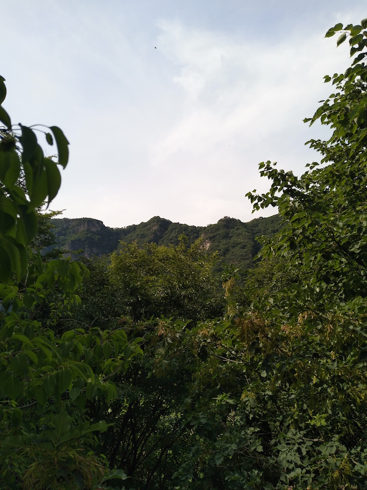

箭扣-慕田峪全穿游记
从上次爬完慕田峪后半段的野长城之后,听说箭扣长城更难爬,就激起了我的好奇心，早就想来箭扣试下了,这次趁着端午长假来一次 **箭扣+慕田峪**全穿,体验很不过,记录下来 证明我已经是个老司机了~😄
时间临近端午,5月26号还在想端午去哪里玩儿呢,27号决定去箭扣徒步,搜了点网上驴友的徒步路线 28号就背着双肩背包出发了,开始了为期两天的穿越！
出去玩儿赶早不赶晚,省着由于时间原因扫兴,于是决定起早赶头班地铁,我住在13号线地铁🚇回龙观附近,于是5:30起床出发,坐到望京西 然后赶头班的丰宁城际班车(首班6:40 我六点30左右就到了~据说已经发完一班车了~) 然后上车去往怀柔汽车站了(地图上就一站我以为很快,结果开了一个多小时,终于知道城际班车的意思了,真尼玛远~!)
到达怀柔汽车站需要坐公交🚌去于家园, 车很多 我坐的H21～～ 8点30左右的时候到达于家园公交站,然后就得坐H25路去西栅(zha 不念shan~)子村（不建议坐黑车,40拼车真贵,后面要我20仍然没坐哈哈）,可是头班车11:30 现在才9点不到咋办,先吃顿早餐吧,吃的豆腐脑可香了！！！ 吃完一看时间还早
刚好附近有家不错的电影院🎦,正好可以看场电影看的是<<三只小猪🐷>>,因为这个时间是在没啥电影可以挑的了，纯属打发时间~~~
下午1点多一点到达终点站，西栅子5队,附近好多农家院,我找了家问下 100元/晚(尽管店家各种劝我说山里夜晚冷,没带帐篷呆不了,我是一旦做了决定十匹马都拉不回来的那种,我比较有主见,所以完全没听进去哈哈😄), 不过我并没有入住，只是在这吃了顿午饭,顺便了解下路线情况
正好有两个驴友跟我路线一致（绝大部分人都是从北京结开始或者涧口开始,只走一小段，我既然来了肯定是要全穿的），于是我果断决定结伴同行,后面的经历验证了我这个决定是何等的英明 !!!
先附上网上找的驴友的路线图(路线与我基本一致): 西栅子五队->九眼楼->牛角边->慕田峪
吃晚饭下午两点半 我们问老板娘去九眼楼的路 然后我跟另外两个驴友 就顺着小路进入山里开始山地徒步,离长城有一段是山路，我们得在山林中穿越, 山中岔路真多～～～我们听老板娘的遇见岔路就往左走,否则走错了 可能就走到延庆那边去了~~~
走一小段路看见一个指示牌，据另两个驴友分析这个剪头是错的,于是我们没按照剪头的方向走
山里这种小虫子真多~这好像叫千足虫? 好肥美~~~
还在山里面呢,看见这堆乱石离城楼就不远了
山里面的景色,马上就到城楼了!

下午三点半左右 历时一个小时左右到达城楼 ✌️

城楼两边的村子

登上的第一座城楼

从城楼上远眺 九眼楼 待几分钟稍作休息就前往九眼楼,因为已经4点多了,晚上我们还要原路返回此处城楼在附近城楼露营

前往九眼楼,我们得抓紧时间 6点以后天就黑的很快了,我们现在还不知道晚上在哪里扎营呢,这个地方因为非常陡峭得有近90度角了得攀岩前行,我就叫它90度，后来我们都这么叫这个地方了~

blog comments powered by Disqus